Airedable TerrierThe Airedale Terrier is the largest of all terrier breeds. The breed is tall and sturdy with a muscular body and covered in a thick, course coat of fur. |
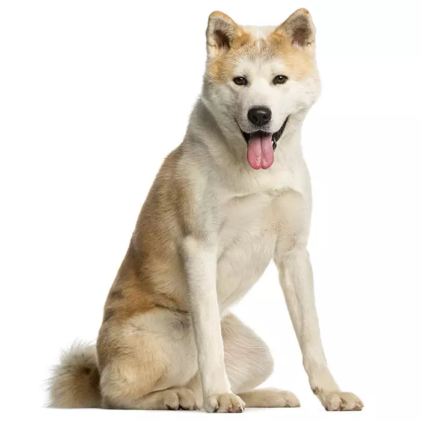
AkitaThe Akita is distinctive large and powerful dog with an aloof attitude. The Akita can be territorial and the dog is not usually welcoming of strangers. |
 Alaskan MalamuteThe Alaskan Malamute is a large and muscular domesticated dog with a heavy fur coat and bounds of energy. The Malamute was originally put to use as a freight-carrying animal because of their endurance in cold climates. |
|
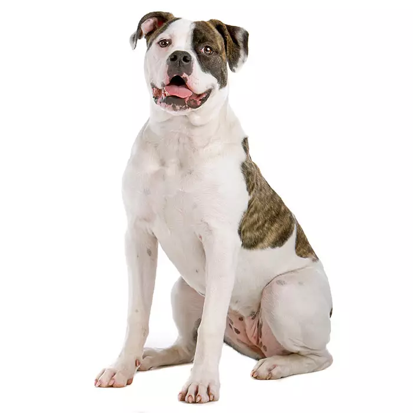
American BulldogThe American Bulldog is a large, stocky and powerful working dog breed from the Mastiff family. |
 American Staffordshire TerrierThe American Staffy, American Staffordshire Terrier or Amstaff is a very muscular and energetic medium-sized breed of domesticated dog with a short silky coat and a highly loyal and courageous temperament. |
 Australian BulldogThe modern Australian Bulldog was in Queensland in the early 1990s. It was developed from an English Bulldog and an Australian pig hunting dog. |
|
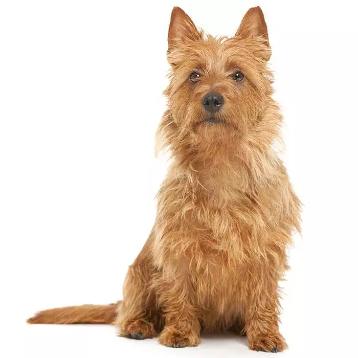
Australian TerrierThe Australian Terrier (a.k.a. “Aussie”) is one of the smallest terrier breeds. It is sturdy, short-legged and has a long head with triangular, erect earsand dark brown eyes. |
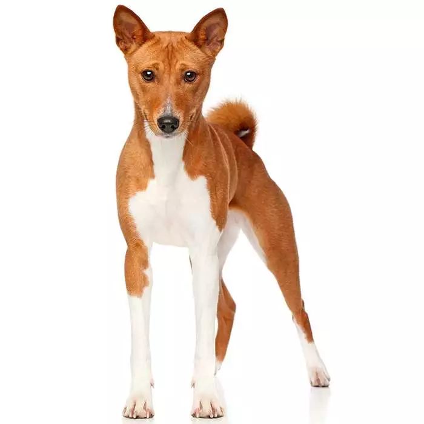
BasenjiThe Basenji is a hound dog and belongs to the smaller dog group. |
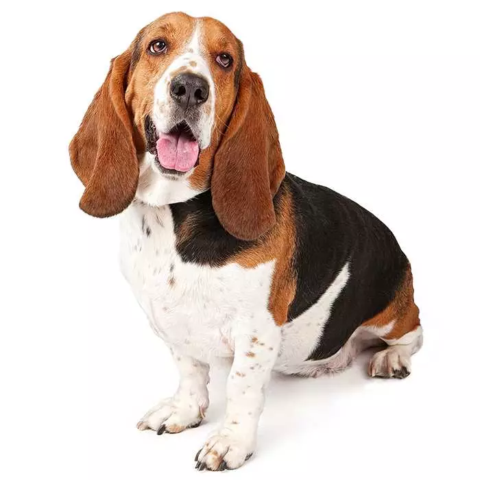
Basset HoundThe Basset Hound is a medium-sized domesticated dog with short, muscular legs and a pair of long drooping ears. Basset Hounds are very long in the body |
|
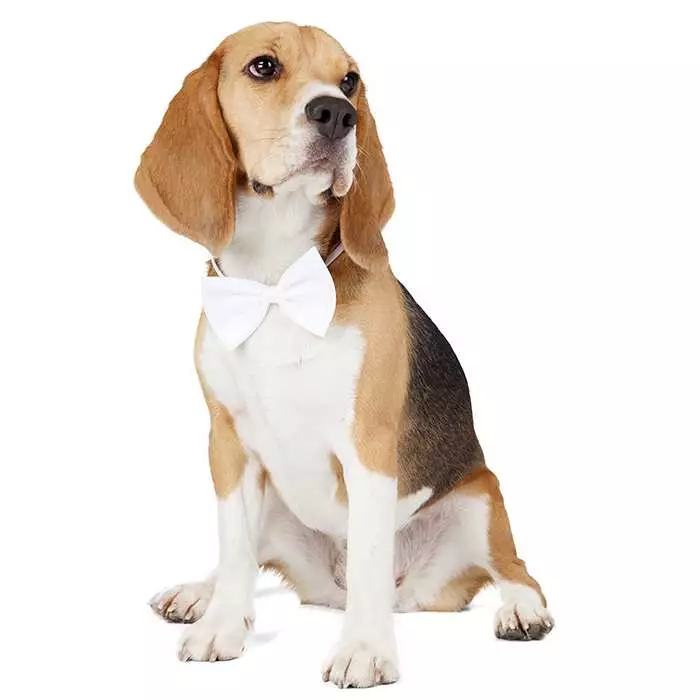
BeagleThe Beagle is member of the hound group of domesticated dogs and its ancestry can be dated back 2,500 years. |
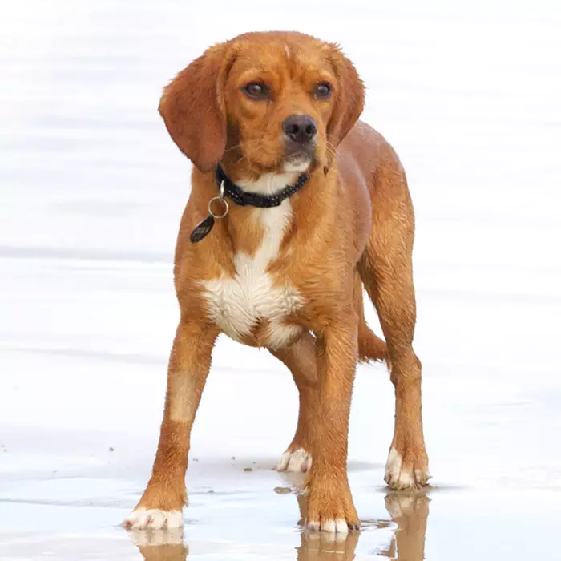
BeaglierBeagliers are affectionate to everybody and everything and love being around their owner, family members and people in general. |
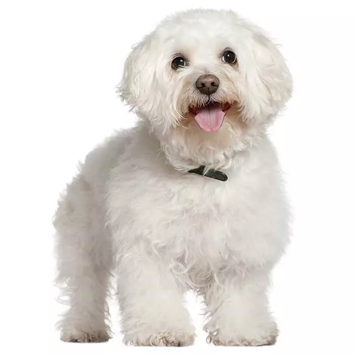
Bichon FriseThe Bichon Frise (or simply “Bichon”) is a small, sturdy dog famous for its curly, fluffy white coat. They were popular in France as performing dogs and companion dogs. |
|
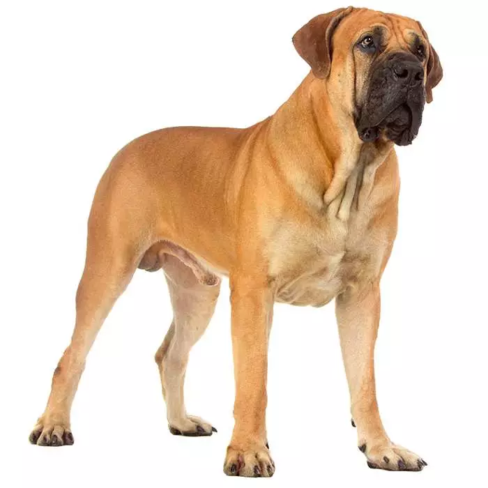
BoerboelThe Boerboel is a very large domesticated working dog. Muscular, exceedingly strong and loyal to a fault, the South African Mastiff is a tough breed, bred for guarding the homestead in hard African conditions. |
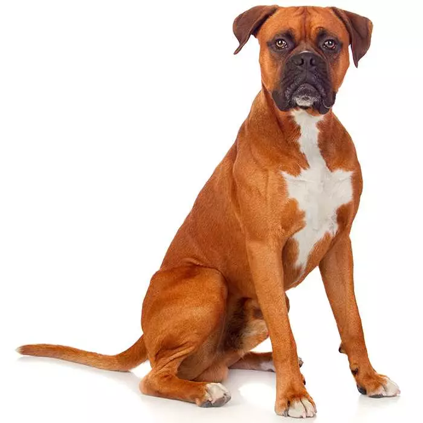
BoxerThe Boxer is a medium-sized domesticated dog with a very muscular and stocky build, short shiny coat and a long powerful tail. |
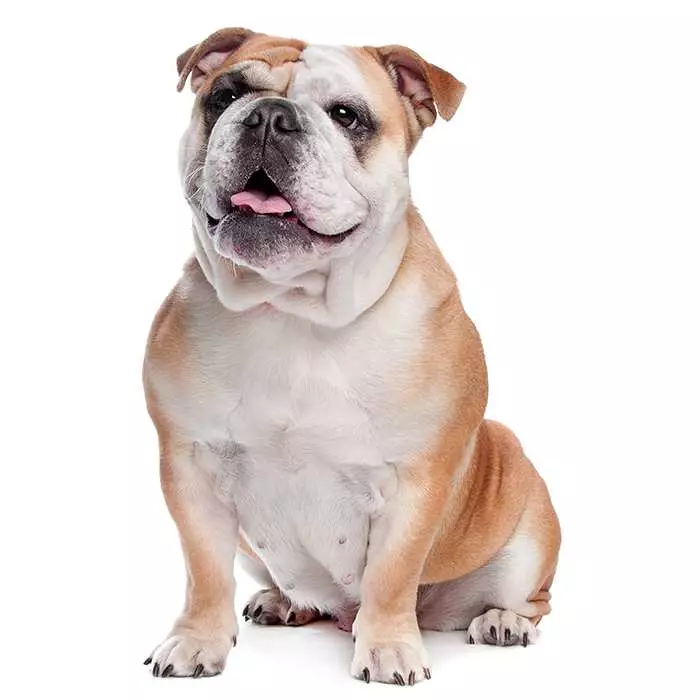
British BullDogThe English Bulldog is iconic for its wide-set frame, muscular physic and compact stubby legs. |
|
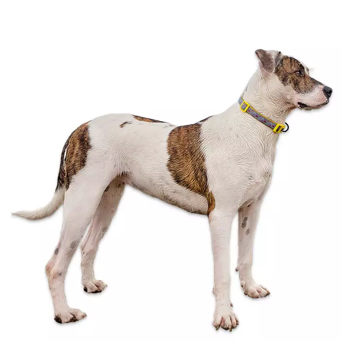
Bull ArabThe Bull Arab is a tough, active dog with an excellent balance of power, speed and endurance. As dominant and potentially aggressive hunters, Bull Arabs aren’t for everyone. |
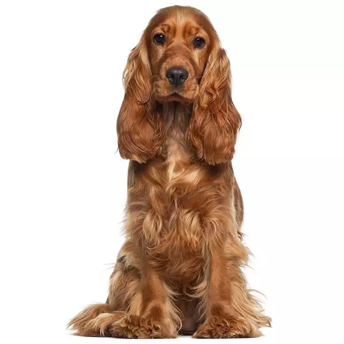
Cocker SpanielThe Cocker Spaniel is a medium-sized, long-haired dog that originated in the UK as hunting dogs. |
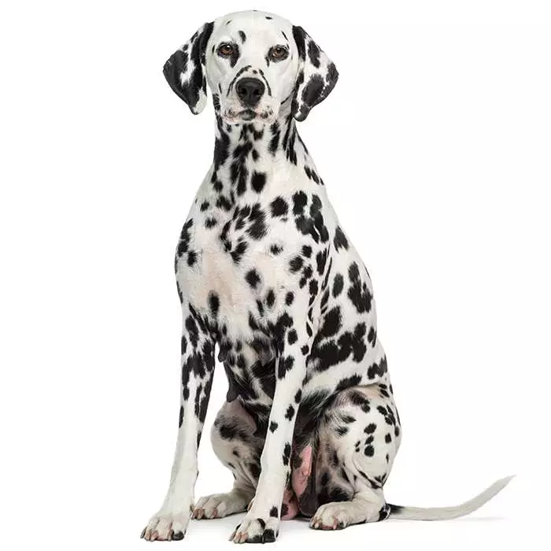
DalmatianThe Dalmatian is a medium-sized, muscular dog known for its distinctive black-and-white spotted coat. |